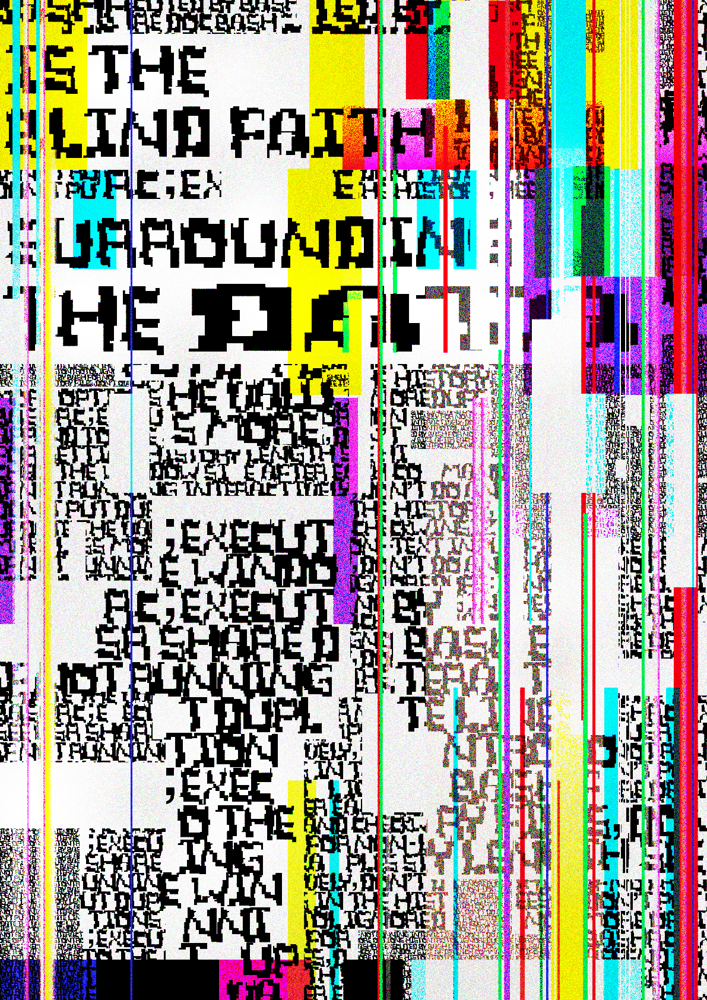

We have created a new type of alphabet through grids made from image base, and finally we will address surface areas for visual meaning transmission. Our alphabet, which has come out through the process so far, is more like a visual representation of the designer's subjective, image abstractness rather than a text that only thinks about objective and direct meaning. In other words, the goal of our graphic language is not the objective and accurate conveyance of meaning by text, but by visual and subjective expressions in which free expression is important without limitation in the medium of expression.
So we use the alphabet to take various forms of poster work to the final goal. Posters are one of the mediums for publishing with flat-panel format, a visual transmission medium that allows for a better understanding of the message that is intended to be delivered to the public. Posters today will serve as the most representative medium of graphic design, since they have a free format for ideas and expressions compared to other media.
In the poster, the alphabet itself is expressed in a form that contains meaning, and characters that were only recognized as letters will be seen as visual images, not just letters. Depending on how you combine the types, the letters will display a myriad of functionalities and try various expressions.
